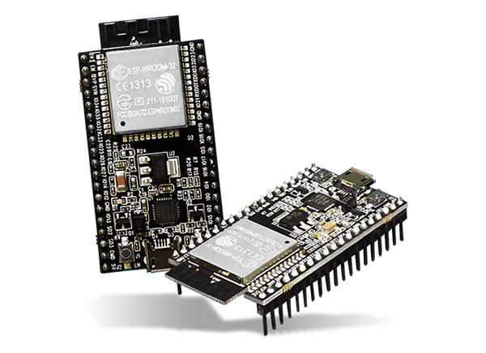
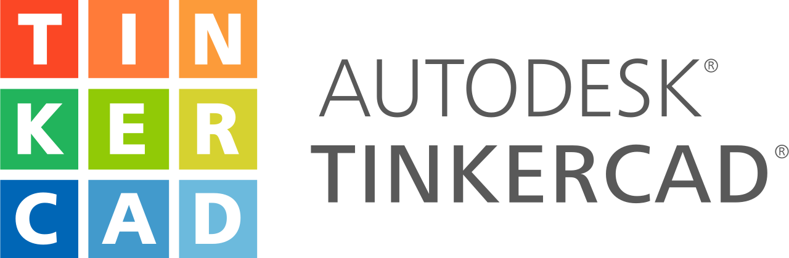
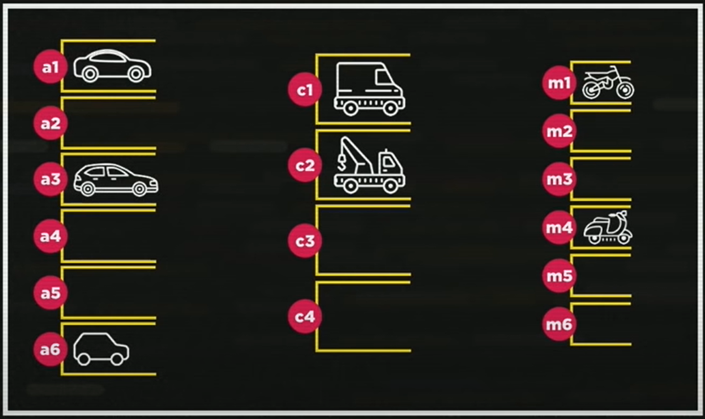

É o uso de tecnologia para controlar e monitorar processos de produção e manufatura em ambientes industriais. Envolve a aplicação de sistemas computadorizados, dispositivos eletrônicos e software para automatizar tarefas que anteriormente eram realizadas manualmente ou por meio de controle humano direto.
Arduino é uma plataforma de prototipagem eletrônica de código aberto, composta por hardware e software, projetada para facilitar o desenvolvimento de projetos eletrônicos interativos. A plataforma Arduino consiste em uma placa de circuito impresso com um microcontrolador e uma série de pinos de entrada/saída que podem ser programados para executar diversas funções
.png)
O ESP32 é um microcontrolador de baixo custo e baixo consumo de energia desenvolvido pela empresa chinesa Espressif Systems. Ele é amplamente utilizado em projetos de IoT (Internet das Coisas), automação residencial, dispositivos portáteis e uma variedade de outras aplicações.
Tinkercad é uma plataforma online de design 3D e eletrônica, desenvolvida pela Autodesk. Ele oferece ferramentas simples e intuitivas para criar modelos 3D, circuitos eletrônicos e simulações sem a necessidade de instalar nenhum software adicional.
Modelagem 3D/ Circuitos Eletrônicos/ Simulações/ Compartilhamento e Colaboração;
Wokwi é uma plataforma online que oferece simuladores de hardware para desenvolvimento e prototipagem de sistemas embarcados e eletrônicos. Ele fornece uma maneira fácil e acessível de simular o funcionamento de microcontroladores e componentes eletrônicos em um ambiente virtual.
Simuladores de microcontroladores/ Bibliotecas de componentes/ Facilidade de uso/ Compartilhamento e colaboração;

É o processo de criação e manutenção de websites e aplicações web. Envolve diversas disciplinas e tecnologias para construir a estrutura, design e funcionalidade de sites que são acessados através da internet.
É a linguagem de marcação padrão usada para criar e estruturar páginas na web. Aqui está um resumo dos conceitos essenciais de HTML:
Uma página HTML é composta por elementos que são definidos por tags. Cada elemento tem uma tag de abertura e uma tag de fechamento, com o conteúdo entre elas.

A linguagem de marcação usada para estruturar o conteúdo na web.

A linguagem de programação que adiciona interatividade e funcionalidades dinâmicas aos websites
Linguagens como Python, Java, Ruby, PHP e JavaScript (usando Node.js) são usadas para construir a lógica do servidor.
Sistemas como MySQL, PostgreSQL, MongoDB e SQLite que armazenam e gerenciam dados.
Servidores web como Apache e Nginx que hospedam websites e aplicativos. Serviços em nuvem como AWS, Google Cloud e Azure são frequentemente utilizados para escalar e gerenciar a infraestrutura.
Um editor de código leve e altamente personalizável, desenvolvido pela Microsoft. Ele possui suporte integrado para várias linguagens de programação, extensões e integração com controle de versão.
Um banco de dados é um sistema organizado para coletar, armazenar e gerenciar dados de forma eficiente. Ele serve como uma infraestrutura fundamental para muitas aplicações de software, permitindo a recuperação rápida e precisa de informações. Existem diferentes tipos de bancos de dados, como bancos de dados relacionais e bancos de dados NoSQL.
Um tipo de banco de dados que organiza os dados em tabelas relacionadas entre si. Cada tabela é composta por linhas (também conhecidas como registros) e colunas (também conhecidas como campos). As relações entre as tabelas são estabelecidas através de chaves estrangeiras, que são colunas que fazem referência a chaves primárias em outras tabelas.
Sistema de gerenciamento de banco de dados relacional de código aberto, altamente escalável e com uma forte reputação de confiabilidade e robustez.

Um banco de dados NoSQL (Not Only SQL) é um tipo de banco de dados que difere dos bancos de dados relacionais tradicionais em seu modelo de armazenamento e manipulação de dados.
Bancos de dados baseados em chave/valor permitem que as aplicações guardem seus dados sem um formato especifico, sendo armazenados como duplas de chaves e seus respectivos valores.
Este modelo armazena coleções e documentos. Um documento é um objeto com identificador único e um conjunto de campos que podem ser strings , listas ou documentos aninhados e o valor deste.
Os Bancos de dados baseados em colunas guardam seus dados divididos por colunas,permitindo que sejam facilmente acessadas as colunas de múltiplos registros assim diminuindo o acesso ao disco e o tempo de processamento.
São otimizados para armazenar e consultar dados que estão estruturados como grafos. Um grafo é uma estrutura de dados que consiste em nós (também chamados de vértices) que estão conectados por arestas (também chamadas de relacionamentos).
É um banco de dados de código aberto, gratuito, de alta performance, sem esquema (schema free) e orientado a documentos lançado em fevereiro de 2009 pela empresa 10gen.

Linguagem de programação é uma linguagem formal projetada para expressar processos que podem ser realizados por máquinas, como computadores, de forma precisa. Essas linguagens permitem que os programadores escrevam instruções que serão interpretadas ou compiladas para criar software ou executar tarefas específicas. Existem muitas linguagens de programação diferentes, cada uma com suas próprias regras sintáticas e semânticas. Algumas são mais adequadas para tarefas específicas do que outras, e a escolha da linguagem geralmente depende das necessidades do projeto, preferências pessoais e recursos disponíveis. Exemplos de linguagens de programação populares incluem Python, Java, C++, JavaScript
A linguagem de programação é um método padronizado, formado por um conjunto de regras sintáticas e semânticas, de implementação de um código fonte - que pode ser compilado e transformado em um programa de computador, ou usado como script interpretado - que informará instruções de processamento ao computador
Na sintática a gramatica é escrita de forma errada mais você entende oque algo escrito quer dizer.
Já na Semântica a gramatica é correta mais oque está escrito nao faz sentido
.jpeg)
O compilador gera um arquivo executável que pode ser executado diretamente no sistema operacional. Por outro lado, um interpretador traduz o código fonte linha por linha durante a execução.
.jpeg)
é um ambiente de desenvolvimento integrado (IDE) usado principalmente para o desenvolvimento de software em linguagens como Java, Kotlin, Groovy, Scala, e outras.
Conforme ilustração a seguir, podemos imaginar as variáveis como vagas dentro de um estacionamento. Cada vaga possui uma numeração para facilitar sua localização, assim como utilizamos um nome ao declarar uma variável, para facilitar o seu uso no programa. Alguns estacionamentos podem ter vagas de tamanhos diferentes para comporta diferentes tipos de veículos. O mesmo ocorre com as variáveis que podem armazenar diferentes tipos de dados..
.png)

.png)
Ao declarar uma variável em um código ela passa a existir não sendo necessário declará-la novamente.


é uma estrutura de controle de fluxo que permite selecionar um dos muitos blocos de código a serem executados, dependendo do valor de uma expressão. Essa estrutura é geralmente usada quando há múltiplas condições a serem avaliadas e diferentes ações a serem tomadas com base nessas condições.
A estrutura do switch permite que haja um teste lógico para cada case em sua estrutura, funcionando como um conjunto de ifs aninhados.


confira no meu GitHub exercicios com este conteúdo aplicado, clicando abaixo

A estrutura de repetição while permite a criação de um loop que executa um bloco de instruções repetidas vezes enquanto uma condição for verdadeira

Semelhante ao while o do/while obriga que o bloco de instruções seja executado ao menos uma vez:

Possui a mesma ideia que o while porém com uma estrutura fixa que obriga a criação de uma variável de controle
Vetores (array) são variáveis que reservam regiões da memória que podem alocar diversos valores do mesmo tipo em sequencia. Para acessar estes valores utiliza-se o nome dado ao vetor + um índice numérico.

Armazenamento de Dados/ Acesso aos Elementos/ Iteração/ Manipulação de Dados/ Ordenação/ Busca/ Redimensionamento;
Uma matriz é uma estrutura de dados bidimensional que armazena elementos em linhas e colunas. Ela é uma extensão natural dos vetores unidimensionais, permitindo armazenar dados em uma grade ou tabela.

Armazenamento de Dados/ Acesso aos Elementos/ Iteração/ Manipulação de Dados/ Busca e Ordenação;
Confira no meu Github clicando abaixo, exercicios trabalhados com esse conteúdo
É uma disciplina interdisciplinar que combina conhecimentos de estatística, programação, matemática e domínio do assunto para extrair insights e conhecimentos úteis a partir de grandes conjuntos de dados. Isso é feito através de várias etapas, incluindo a coleta, limpeza e organização dos dados, análise exploratória, modelagem estatística e machine learning, e visualização de dados para comunicar resultados de forma clara e eficaz.
Plataforma de código aberto baseada na nuvem que permite escrever e executar códigos em Python diretamente no navegador, sem a necessidade de configurar um ambiente de desenvolvimento local.